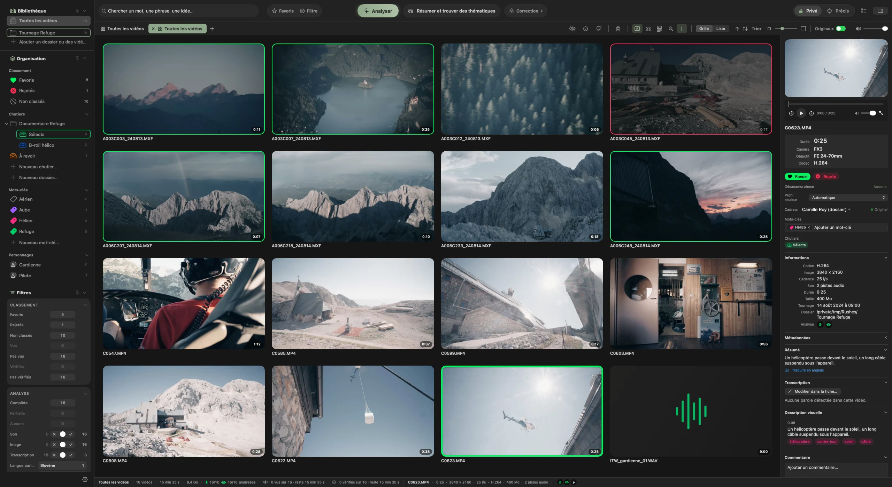
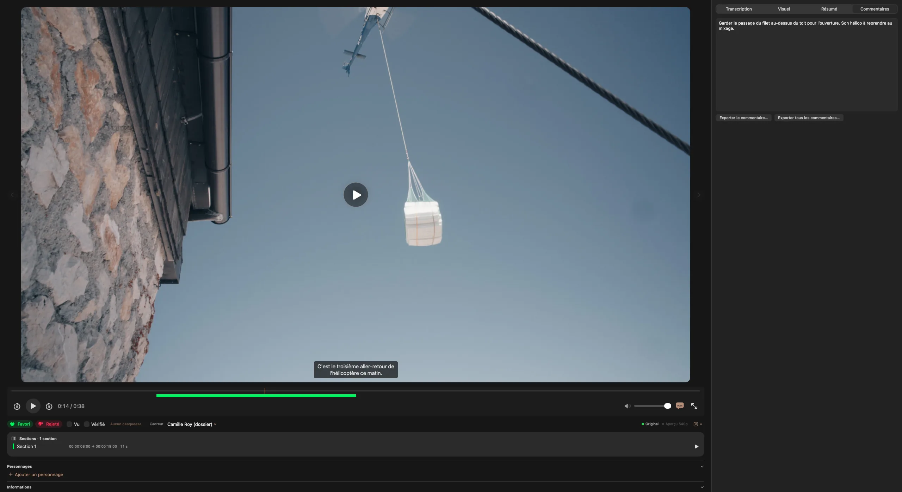

Privé
Tout reste sur votre Mac
Transcription, descriptions des images, résumés, thématiques et traduction tournent sur votre Mac : gratuit, illimité, sans connexion, rien n’est envoyé.
- Un peu moins précis qu’en Précis : répliques courtes, petits textes à l’image, échanges rapides et familiers.
- Recherche par les mots et par l’image, pas par le sens.
- Les modèles se téléchargent une fois, puis tout marche hors ligne.
À choisir pour des rushs confidentiels, de gros volumes, ou un montage en déplacement.


